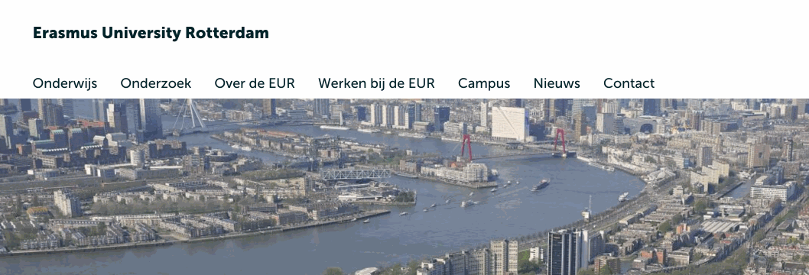
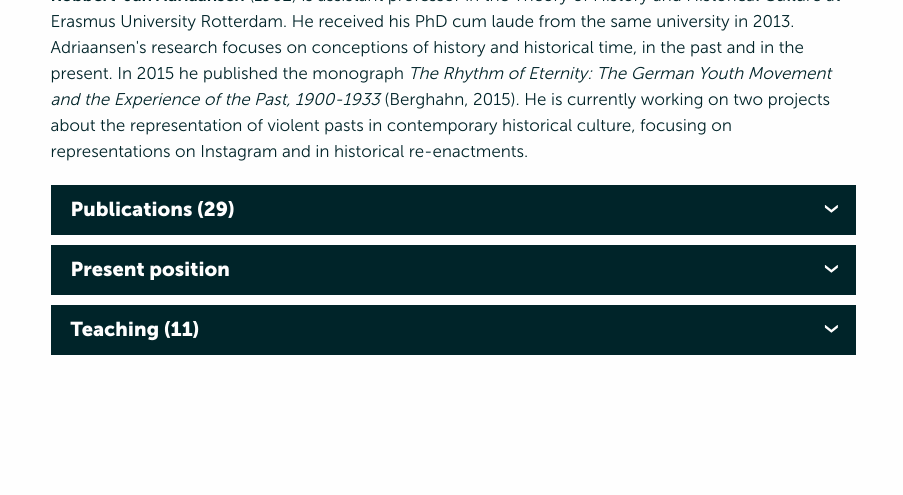
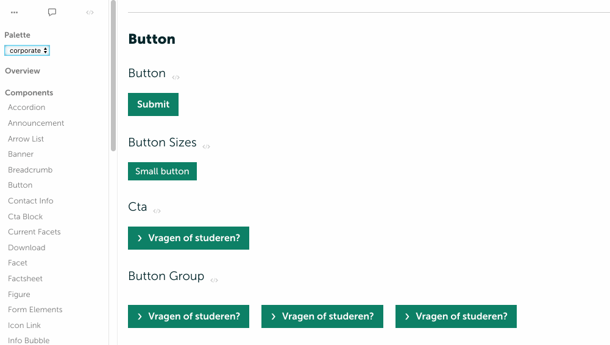
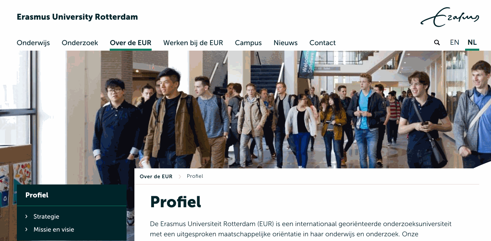

Webtoegankelijkheid in praktijk
De User Story is getest op toegankelijkheid
Extra uitklapmogelijkheid voor toetsenbordgebruikers

Uitklappers met meerdere niveau's met toetsenbordondersteuning

Ter ondersteuning van ontwerp en testers

Mogelijkheid om navigatie over te slaan voor toetsenbordgebruikers

//------------------------------------------------------------------------------
// Outline. Temp solution for Jules.
//------------------------------------------------------------------------------
*:focus {
outline: .1rem solid #51CBEE;
box-shadow: inset 0 0 .5rem #51CBEE;
animation: outline-animate .1s linear 0s 1 normal;
animation-fill-mode: forwards;
}
Kijk op ezcompany.nl